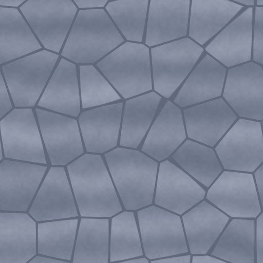
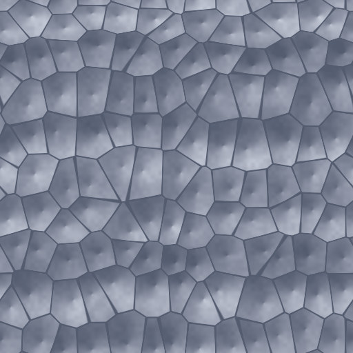
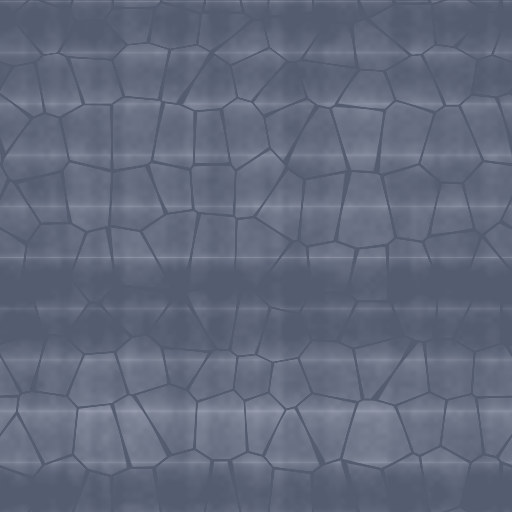
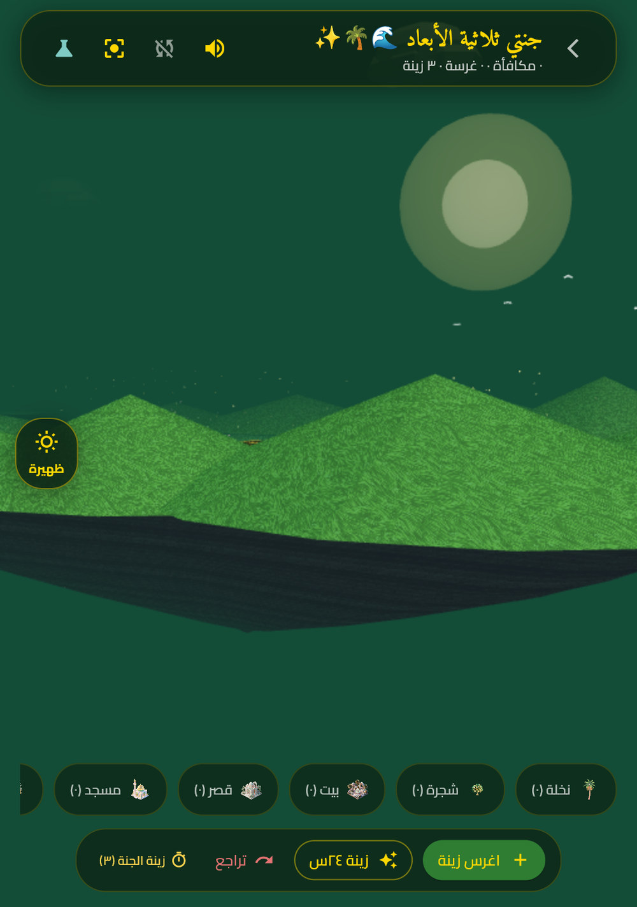
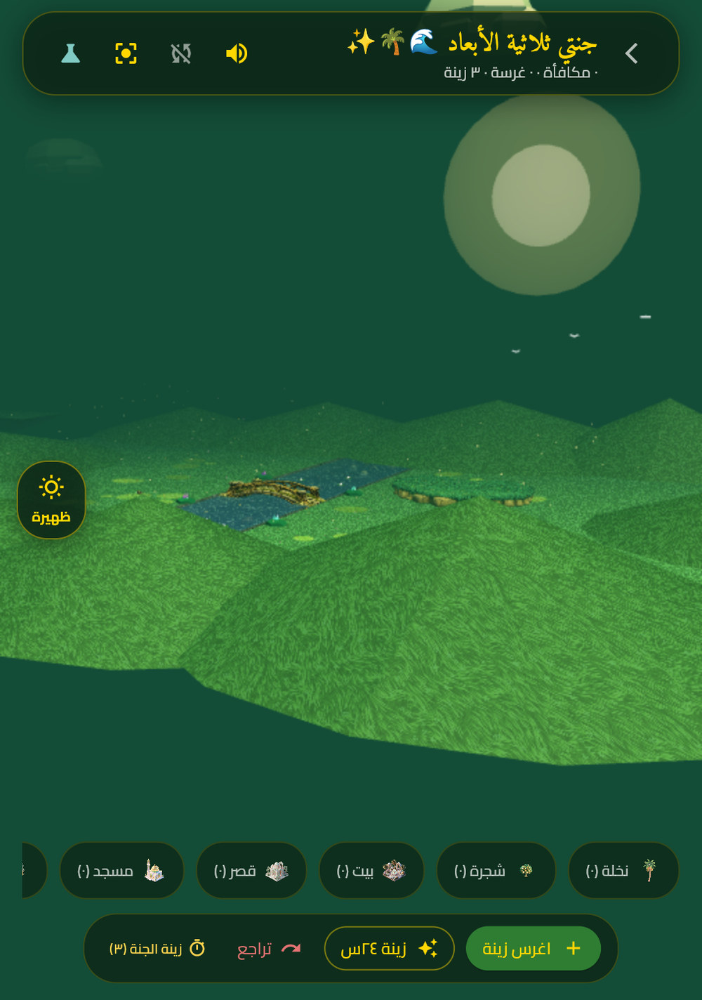
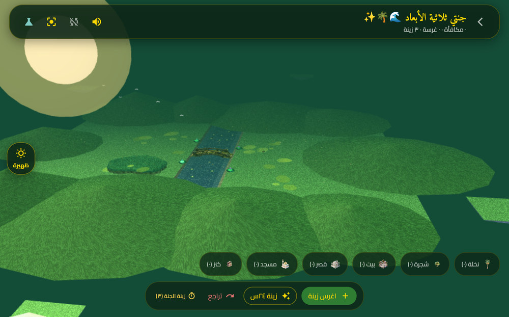
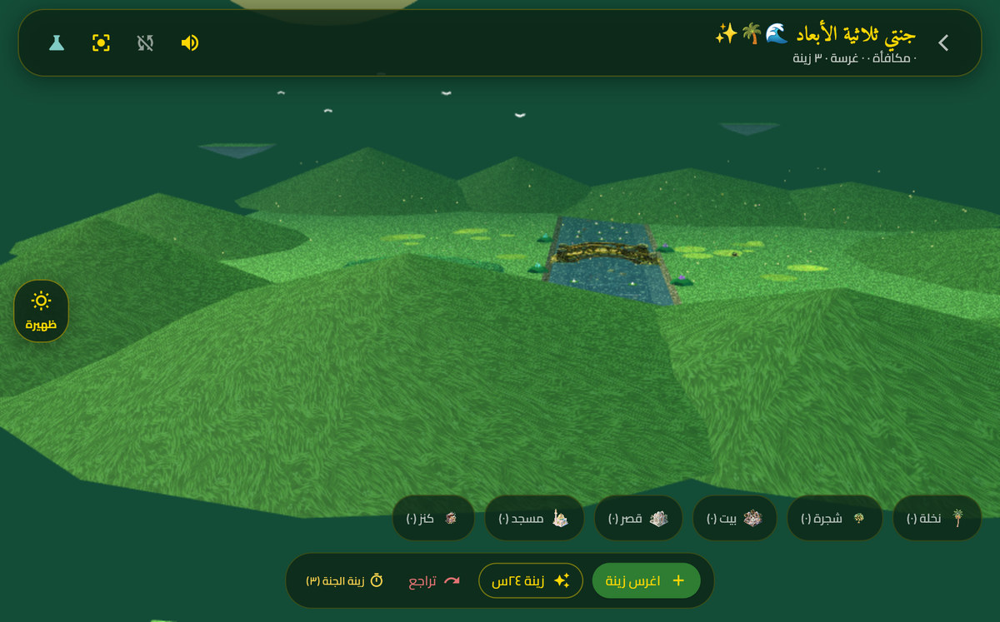
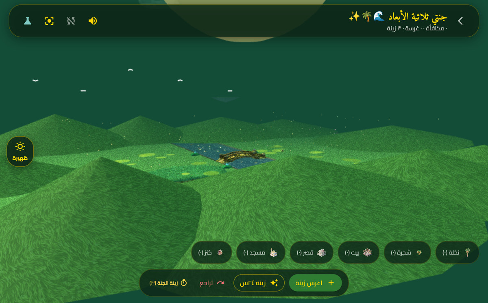

جَنَّتِي · سجل تطوّر المشهد · المرحلة ٣
الجزيرة الطافية
١٣ نوفمبر ٢٠٢٦ — تحويل الأرضية إلى كتلة بسماكة: جرف صخري، جزر صغيرة طافية، وسحب سفلية.

المشكلة قبل المرحلة
الأرض كانت مستويًا بلا سماكة: من أي زاوية منخفضة تُقرأ مسطّحًا أخضر لا جزيرة. والقمم المحيطية كانت تجلس على الأرض القديمة، فصار تحتها فراغ بعد التحويل.
القرارات
-
خامة الجرف إجرائية (
cliff_rock.png، ٥١٢px، ١٦٠ ك.ب) لأن الجرف يُبنى في الكود ولا يوجد له أطلس في أي أصل. مولّدهاtool/assets/prep_cliff_texture.py: فورونوي ملتوٍ + طبقات أفقية + حبيبات. -
لون الخامة بارد عن قصد (متوسط ٩٨،١٠٥،١٢٥): شمس الظهيرة
0xFFE082تضاعف الأحمر/الأخضر وتخفض الأزرق، فيصل الصخر إلى الشاشة رماديًا دافئًا لا أصفر. -
حلقة الجرف العليا عند ١٤٠×٩٠ بالضبط لتطابق حدّ المرج، ثم
١٤١×٩١ عند
y = −1.6كحافة بارزة. - القمة تُغلق بحلقة صغيرة ومروحة مثلثات. لا تُترك ١٢٨ نقطة متطابقة: نواظمها تتلاشى ويخرج السطح أسود.
-
الجرف يخرج أسود بلا ضوء ارتداد لأنه يواجه عكس الشمس دائمًا.
الحل: ضوءان من الأسفل (
0x9DB2C4) مربوطان بشدةspec.ambientIntensityفيتبعان دورة النهار. -
اتجاه لفّ المثلثات
[a, b, c, b, d, c]يعطي نواظم للخارج. الترتيب المعتاد[a, c, b]يقلبها ويجعل السطح الداخلي هو المرئي.
اللقطات
















ما بقي مفتوحًا عند الأرشفة
- الجرف محجوب عن اللاعب —
maxPolarAngle = 1.483تُبقي الكاميرا فوق مستوى العشب، وحلقة القشرة العليا عند حدّ المرج فتختفي تحته. - كادر الافتتاح لا يُظهر الجزيرة — مسافة ٨٥ وحدة والجزيرة ٢٨٠×١٨٠.
- الجزر الطافية تُقرأ ألواحًا مسطّحة — تُرى قبعة العشب فقط بلا صخرة.
- الجبال المحيطية تطفو فوق الفراغ بعد تحويل الأرض إلى قشرة.
- الضباب
Fog(0x134C37, 150, 460)يحجب الحواف البعيدة.
هذه الملاحظات الخمس هي ما دفع المرحلة ٤: استبدال الأرض كلها بجزيرة
FreeLowPolyForest، حيث الجبال والبحيرات والحدود من مشهد واحد.